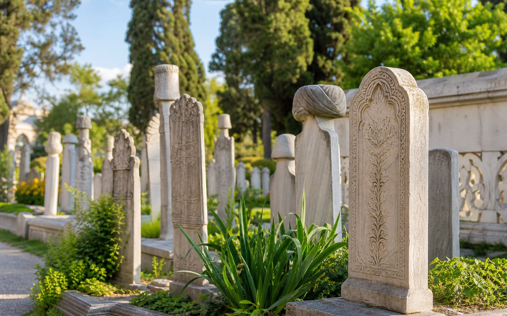

Gönülden gönüle
Gönül Postası
İyilik, vefa ve hatırlayış duygusunu taşıyan mesajları gönüllere ulaştırıyor; her paylaşımın yeni bir iyilik halkasına dönüşmesini amaçlıyoruz.
Gönül Yolcuları olarak her çalışmamızda geçmişin izini bugünün imkânlarıyla görünür kılmayı, iyiliği ise daha erişilebilir ve paylaşılabilir hale getirmeyi hedefliyoruz.
Tarihî mezarlık ve hazire alanlarındaki mezar taşı bilgilerini dijital düzene aktarıyor; ziyaretçilerin konum, açıklama ve kitabe bilgilerine kolayca ulaşmasını sağlıyoruz.

Kurumların yardım kaydı oluşturduğu, teslim alma ekiplerinin üstlendiği ve dağıtım görevlilerinin süreci tablo üzerinden takip ettiği modern yönetim paneli.
İyilik, vefa ve hatırlayış duygusunu taşıyan mesajları gönüllere ulaştırıyor; her paylaşımın yeni bir iyilik halkasına dönüşmesini amaçlıyoruz.